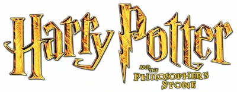

Introducción
¡Bienvenidos al rincón mágico del universo Harry Potter! En este sitio web, exploraremos el fascinante mundo de las películas que han cautivado a millones de fanáticos en todo el mundo. Desde la llegada del joven mago a Hogwarts hasta las épicas batallas finales, cada entrega de la saga ofrece una experiencia cinematográfica única que ha marcado un antes y un después en el cine de fantasía.
La serie cinematográfica de Harry Potter comprende ocho películas basadas en Harry Potter, una serie de siete novelas juveniles escritas por la autora británica J. K. Rowling y protagonizadas por el mago ficticio del mismo nombre. Se trata de películas de cine fantástico, todas basadas en las novelas de la saga y todas estrenadas en el decenio comprendido entre 2001 y 2011. Se realizó una película por cada libro de la saga a excepción del último libro, cuya adaptación cinematográfica ocupó dos películas distintas.
Los largometrajes fueron producidos por el estudio estadounidense Warner Bros., que se asoció con la productora de David Heyman con el fin de trasponer las novelas a la pantalla grande.
La primera película de la franquicia, Harry Potter y la piedra filosofal, fue estrenada mundialmente a finales del año 2001 y desde entonces se estrenó una nueva entrega con una frecuencia de un mínimo de ocho meses (entre Harry Potter y las reliquias de la Muerte: parte 1 y Harry Potter y las reliquias de la Muerte: parte 2) y un máximo de dos años (entre Harry Potter y la Orden del Fénix y Harry Potter y el misterio del príncipe).
Diez años después, el 1 de enero de 2022 se estrenó el documental Harry Potter 20th Anniversary: Regreso a Hogwarts en la plataforma de streaming HBO Max en el que los protagonistas y actores más emblemáticos se reencuentran por el 20º aniversario del estreno de la primera película de la saga (Harry Potter y la piedra filosofal), con entrevistas exclusivas e imágenes de archivo del detrás de cámaras.
Peliculas
Harry Potter y la Piedra Filosofal
Argumento
Harry Potter es un niño huérfano que vive con sus únicos parientes vivos, la familia Dursley, en un barrio residencial inglés. En su cumpleaños número 11, Harry es visitado por un misterioso individuo llamado Rubeus Hagrid, quien le revela que realmente él es un mago bastante popular en el mundo mágico por haber sobrevivido al ataque mortal de Lord Voldemort cuando solamente tenía un año de edad. Quien al principio sus tíos les dijeron que sus padres fallecieron en un “accidente” pero nunca fue cierto. Tras haber asesinado a sus padres (James y Lily Potter), Voldemort intentó matar a Harry pero no lo consiguió, dejándole solamente una cicatriz en forma de rayo sobre su frente. Sabiendo esto, Hagrid acompaña a Harry para comprar lo necesario con tal de comenzar su formación en el Colegio Hogwarts de Magia y Hechicería.
Sin el consentimiento de sus tíos, Harry Potter asiste a Hogwarts para empezar a aprender conjuros y conocer a nuevos amigos; en el proceso, también inicia sus rivalidades con otros estudiantes y parte del personal del colegio. Durante su estancia, Harry Potter descubre que la institución alberga un misterioso objeto en sus dominios, el cual es conocido como la piedra filosofal. Este poderoso elemento es buscado discretamente por Voldemort, a quien la comunidad mágica daba por muerto tras haberle rebotado el ataque mortal dirigido contra Harry Potter. Contrario a dichas creencias, su espíritu desea afanosamente encontrar la piedra para recuperar sus antiguas habilidades de brujo. Además, la piedra filosofal es conocida por otorgar igualmente la inmortalidad a su poseedor.
Tras intuir que alguien está intentando robar la legendaria piedra, Harry y sus amigos, Hermione Granger y Ron Weasley, dan aviso a los profesores del colegio pero estos se niegan a creer que sus advertencias tengan fundamento, puesto que saben que el objeto se halla bien resguardado en una cámara secreta y vigilada. En vista de lo anterior, deciden acudir a la cámara para asegurarse de que nadie consiga robarla. Una vez dentro, se topan con una serie de obstáculos y trampas que deben sortear antes de llegar al cuarto donde se aloja la piedra filosofal. Al final, sólo Harry logra llegar a este destino encontrándose con el profesor Quirinus Quirrell en el lugar. El profesor admite que ha sido él quien ha mantenido con vida a lord Voldemort al alimentarse con sangre de unicornios en el Bosque Prohibido, alojándolo a manera de parásito en su cuerpo. Después de enfrentarse contra Quirrell y Voldemort, Harry Potter logra evitar que este último se apodere de la piedra, la cual a últimas instancias es destruida por el director del colegio, Albus Dumbledore. Al concluir el período escolar, Harry regresa a su hogar con los Dursley en espera de que comience su segundo año en Hogwarts.
Reparto
- Daniel Radcliffe como Harry Potter
- Rupert Grint como Ron Weasley
- Emma Watson como Hermione Granger
- John Cleese como Nick Casi Decapitado
- Robbie Coltrane como Rubeus Hagrid
- Richard Griffiths como Vernon Dursley
- Richard Harris como Albus Dumbledore
- Ian Hart como Quirinus Quirrell
- John Hurt como Sr. Ollivander
- Alan Rickman como Severus Snape
- Fiona Shaw como Petunia Dursley
- Maggie Smith como Minerva McGonagall
- Sean Biggerstaff como Oliver Wood
- Warwick Davis como Filius Flitwick
- Zoë Wanamaker como Rolanda Hooch
- Julie Walters como Molly Weasley
- David Bradley como Molly Weasley
- Tom Felton como Draco Malfoy
Harry Potter y la Cámara Secreta
Argumento
Harry Potter pasa el verano con los Dursley y conoce a Dobby, un elfo doméstico que le advierte que no vuelva a Hogwarts o correrá peligro. Cuando Harry se niega, Dobby sabotea una cena importante para los Dursley, que encierran a Harry para impedir su marcha. Ron Weasley, amigo de Harry, y sus hermanos Fred y George lo rescatan en el coche volador de su padre.
En el callejón Diagon, Harry, los Weasley y Hermione Granger se percatan de una firma de libros de Gilderoy Lockhart, el nuevo profesor de Defensa contra las Artes Oscuras de Hogwarts. Allí, Harry ve al padre de Draco Malfoy, Lucius, introducir un libro en el caldero de Ginny Weasley. Después de que les impidan entrar en el andén nueve y tres cuartos de la estación de ferrocarril de King's Cross, Harry y Ron cogen el coche para ir a Hogwarts. Allí, se estrellan contra el monumento al Whoming. Allí, chocan contra el Sauce Silbador, rompiendo la varita de Ron, y son castigados.
En el castigo, Harry oye una voz extraña y más tarde encuentra a la gata del conserje Argus Filch, la Sra. Norris, petrificada junto a un mensaje escrito con sangre: "La Cámara de los Secretos ha sido abierta, enemigos del heredero... cuidado". Uno de los fundadores de Hogwarts, Salazar Slytherin, supuestamente construyó una Cámara secreta que contiene un monstruo que sólo su heredero puede controlar, capaz de purgar el colegio de alumnos nacidos de muggles. Para resolver este misterio, Harry, Ron y Hermione planean interrogar a Malfoy, utilizando poción de poliojugos, que elaboran en un cuarto de baño encantado por Myrtle la Melancólica, un fantasma.
Durante un partido de quidditch, una Bludger le rompe el brazo a Harry. Dobby le visita en la enfermería y le revela que cerró la barrera del Andén Nueve y Tres Cuartos e hizo que la Bludger persiguiera a Harry para obligarle a abandonar el colegio. También revela que la Cámara había sido abierta en el pasado. Cuando Harry se comunica con una serpiente, el colegio empieza a creer que es el heredero. Disfrazados de dos amigos de Malfoy, Harry y Ron descubren que no es el heredero, pero se enteran de que una niña nacida de muggles murió la última vez que se abrió la Cámara. Harry encuentra un diario encantado propiedad del antiguo alumno Tom Marvolo Riddle, que abrió la Cámara y culpó a Rubeus Hagrid, lo que provocó su expulsión. Cuando roban el diario y Hermione se queda petrificada, Harry y Ron interrogan a Hagrid. El profesor Dumbledore, el ministro de Magia Cornelius Fudge y Lucius llegan para llevarse a Hagrid a Azkaban y destituir a Dumbledore, pero éste les dice discretamente a los chicos que "sigan a las arañas". En el Bosque Prohibido, Harry y Ron se encuentran con la araña gigante mascota de Hagrid, Aragog, que revela la inocencia de Hagrid y proporciona una pequeña pista del monstruo de la Cámara.
Una página de libro en la mano de Hermione identifica al monstruo como un basilisco, una serpiente gigante que mata a las personas que hacen contacto visual directo con él; las víctimas petrificadas sólo lo vieron indirectamente. El personal del colegio se entera de que Ginny ha sido llevada a la Cámara y nombra a Lockhart para salvarla. Harry y Ron encuentran a Lockhart preparándose para huir, desenmascarándolo como un fraude. Deduciendo que Myrtle era la niña nacida de muggles que el basilisco mató, encuentran la entrada de la Cámara en el baño que ella frecuenta. Una vez dentro, Lockhart intenta detener a Harry y Ron utilizando un encantamiento de memoria. Sin embargo, como se apodera de la varita rota de Ron, el hechizo sale mal, borrando la memoria de Lockhart y provocando un derrumbamiento que separa a Harry de Ron y Lockhart.
Harry entra solo en la Cámara y encuentra a Ginny inconsciente, custodiada por Riddle, que resulta ser el heredero de Slytherin y el yo más joven de Voldemort, y que utilizó el diario para manipular a Ginny para que reabriera la Cámara. Después de que Harry exprese su lealtad a Dumbledore, Fawkes, el fénix mascota de éste, llega con el Sombrero Seleccionador, haciendo que Riddle invoque al basilisco. Fawkes ciega al basilisco y el Sombrero Seleccionador produce la Espada de Gryffindor, con la que Harry lucha contra el basilisco. Tras una lucha, lo mata, pero es envenenado por uno de sus colmillos.
A pesar de su herida, Harry apuñala el diario con el colmillo del basilisco, destruyendo a Riddle y reviviendo a Ginny. Las lágrimas de Fawkes curan a Harry, que regresa a Hogwarts con sus amigos y un desconcertado Lockhart, ganándose los elogios de Dumbledore y la liberación de Hagrid. Harry acusa a Lucius, el amo de Dobby, de plantar el diario en el caldero de Ginny, y lo engaña para que libere a Dobby. Las víctimas del basilisco son curadas, Hermione se reúne con sus amigos y Hagrid es liberado de Azkaban.
Reparto
- Daniel Radcliffe como Harry Potter
- Rupert Grint como Ron Weasley
- Emma Watson como Hermione Granger
- Kenneth Branagh como Gilderoy Lockhart
- John Cleese como Nick Casi Decapitado
- Robbie Coltrane como Rubeos Hagrid
- Warwick Davis como Filius Flitwick
- Richard Griffiths como Vernon Dursley
- Richard Harris como Albus Dumbledore
- Jason Isaacs como Lucius Malfoy
- Alan Rickman como Severus Snape
- Fiona Shaw como Petunia Dursley
- Maggie Smith como Minerva McGonagall
- Julie Walters como Molly Weasley
- David Bradley como Argus Filch
- Tom Felton como Draco Malfoy
- Sean Biggerstaff como Oliver Wood
- Robert Hardy como Cornelius Fudge
- Shirley Henderson como Myrtle la Llorona
- Gemma Jones como Poppy Pomfrey
- Miriam Margolyes como Pomona Sprout
- Mark Williams como Arthur Weasley
Harry Potter y el Prisionero de Azkaban
Argumento
Harry Potter ha pasado otro verano insatisfactorio con los Dursley. Cuando tía Marge insulta a sus padres, pierde los estribos y hace que ésta se infle accidentalmente como un globo y se aleje flotando. Harto de todo, Harry se va de la casa de los Dursley con su equipaje. El Autobús Noctámbulo lo lleva al Caldero Chorreante, donde es perdonado por Cornelius Fudge, el ministro de Magia, por usar la magia fuera de Hogwarts. Después de reunirse con sus mejores amigos Ron Weasley y Hermione Granger, Harry descubre que Sirius Black, un convicto partidario del mago oscuro lord Voldemort, escapó de la prisión de Azkaban y tiene la intención de matarlo.
El trío regresa en el Expreso de Hogwarts para el tercer año escolar en Hogwarts, solo para que los dementores suban repentinamente al tren buscando a Sirius. Uno de ellos entra en el compartimento del trío, haciendo que Harry se desmaye, pero el nuevo profesor de Defensa contra las Artes Oscuras, el profesor Lupin, repele al dementor con un encantamiento patronus. En Hogwarts, el director Albus Dumbledore anuncia que los dementores vigilarán la escuela mientras Sirius esté en libertad. El jardinero de Hogwarts, Rubeus Hagrid, es anunciado como el nuevo maestro de Cuidado de Criaturas Mágicas; su primera clase sale mal cuando Draco Malfoy provoca deliberadamente al hipogrifo Buckbeak, que lo ataca. Draco exagera su lesión, y su padre Lucius Malfoy hace que más tarde Buckbeak sea sentenciado a muerte.
El retrato de la Dama Gorda, que guarda los cuartos de Gryffindor, se encuentra estropeado y vacío. Aterrorizada y escondida en otra pintura, la Dama le dice a Dumbledore que Sirius consiguió entrar en el castillo. Durante un apasionado partido de quidditch contra Hufflepuff, los dementores atacan a Harry y hacen que se caiga del palo de su escoba. En Hogsmeade, Harry se sorprende al saber que Sirius no solo había sido el mejor amigo de su padre y que lo había traicionado aparentemente con Voldemort, sino que también era su padrino. Lupin le enseña en privado a Harry a defenderse de los dementores, usando el encantamiento patronus.
Después de que Harry, Ron y Hermione se dispusieran a presenciar la ejecución de Buckbeak, la rata mascota de Ron, Scabbers, lo muerde y escapa. Cuando Ron lo persigue, aparece un perro grande que arrastra a ambos a un agujero en la base del sauce boxeador. Esto lleva al trío a través de un pasaje subterráneo a la casa de los Gritos, donde descubren que el perro es en realidad Sirius, que es un animago. Lupin llega y abraza a Sirius como un viejo amigo. Admite ser un hombre lobo, y explica que Sirius es inocente de traicionar a los Potter con Voldemort, así como de asesinar a doce muggles y a su amigo en común, Peter Pettigrew. Se revela que Scabbers es en realidad Pettigrew, un animago que traicionó a los Potter y cometió los asesinatos.
Snape llega para detener a Black, pero Harry lo deja inconsciente con el hechizo expelliarmus. Después de obligar a Pettigrew a volver a su forma humana, Lupin y Sirius se preparan para matarlo, pero Harry los convence de entregar a Pettigrew a los dementores.
Cuando el grupo se va, sale la luna llena y Lupin se transforma en un hombre lobo. Sirius se transforma en su forma de perro para luchar contra él. En medio del caos, Pettigrew se transforma de nuevo en una rata y escapa. Harry y Sirius son atacados por dementores, y Harry ve en la distancia una figura que los salva lanzando un poderoso hechizo patronus. Cree que la figura misteriosa es su padre fallecido, antes de caer desmayado. Se despierta y descubre que Sirius ha sido capturado y sentenciado al beso del dementor.
Siguiendo el consejo de Dumbledore, Harry y Hermione viajan en el tiempo con el giratiempo de Hermione y se ven a sí mismos y a Ron repetir los eventos de la noche anterior. Salvan a Buckbeak de ser ejecutado y presencian a los dementores dominar a Harry y Sirius. El presente Harry se da cuenta de que en realidad fue él quien conjuró el patronus, por lo que lo vuelve a hacer. Harry y Hermione rescatan a Sirius, quien escapa con Buckbeak. Descubierto de ser en realidad un hombre lobo, Lupin renuncia a la enseñanza para evitar el alboroto de los padres de sus alumnos. También le devuelve a Harry el mapa del Merodeador, al no tener ya autoridad para usarlo en la confiscación de contrabando. Sirius le envía a Harry una Saeta de Fuego, un modelo de escoba que el monta felizmente para dar un paseo.
Reparto
- Daniel Radcliffe como Harry Potter
- Rupert Grint como Ron Weasley
- Emma Watson como Hermione Granger
- Julie Christie como Madam Rosmerta
- Robbie Coltrane como Rubeos Hagrid
- Michael Gambon como Albus Gambon
- Richard Griffiths como Vernon Dursley
- Gary Oldman como Sirius Black
- Alan Rickman como Severus Snape
- Fiona Shaw como Petunia Dursley
- Maggie Smith como Minerva McGonagall
- Timothy Spall como Peter Pettigrew
- David Thewlis como Remus Lupin
- Emma Thompson como Sybill Trelawney
- David Bradley como Argus Filch
- Tom Felton como Draco Malfoy
- Pam Ferris como Marge Dursley
- Dawn French como Señora Gorda
- Robert Hardy como Cornelius Fudge
- Julie Walters como Molly Weasley
- Mark Williams como Arthur Weasley
Harry Potter y el Cáliz de Fuego
Argumento
La película inicia cuando Harry Potter empieza a ver en sus sueños al jardinero de los Riddle llamado Frank Bryce, quien escucha a lord Voldemort conspirando junto con Peter Pettigrew (Timothy Spall), su serpiente Nagini y otro joven en la habitación de una casa. Bryce es asesinado por Voldemort al asomarse tras ver luz proveniente de la casa. Más tarde, Harry y sus amigos visitan la final de la Copa Mundial de Quidditch, sin embargo después del partido, la celebración del equipo campeón es súbitamente interrumpida por unos sujetos enmascarados y encapuchados que empiezan a incinerar todo a su paso y a aterrorizar a los espectadores en el lugar, en su intento de escapar Harry tropieza y es pateado en la cabeza quedando inconsciente. Después del incidente, un hombre aparece caminando entre las ruinas para convocar la Marca Tenebrosa en el cielo, por otro lado Harry se despierta del golpe y es encontrado por sus amigos, para posteriormente ser emboscados por un grupo de funcionarios del Ministerio de Magia, entre ellos Barty Crouch Sr. que los acusa de haber lanzado la Marca Tenebrosa, pero Harry sin saber que sucede pregunta de que están hablando, Hermione y Arthur Weasley le explican que es la marca de Voldemort y los que atacaron previamente fueron los Mortífagos de este mago tenebroso.
En el tren de camino a Hogwarts, estos ven la portada del diario El Profeta en donde mencionan que no se encontraron pruebas que expliquen como fue que ese incidente ocurrió frente a las narices del Ministerio sin que lo notarán, Harry por su parte decide escribirle a Sirius para informarle sobre estos acontecimientos recientes.
En Hogwarts, una prestigiosa contienda llamada Torneo de los Tres Magos se va a desarrollar y en ella participarán las tres escuelas de magia más famosas de Europa conformadas por: Hogwarts, Beauxbatons y Durmstrang, además de ello la única forma de poder participar en el torneo es lanzando un trozo de pergamino con su nombre a la llama azul del cáliz de fuego antes del siguiente viernes y donde también Dumbledore les advierte a los todos aspirantes a participar, que si en el peor de los casos su nombre es uno de los seleccionados por el cáliz de fuego, ya no habrá forma ninguna escapatoria de la contienda. En la noche en que se dan a conocer a los representantes de cada colegio por el cáliz de fuego resultan electos Viktor Krum de Durmstrang, Fleur Delacour de Beauxbatons y Cedric Diggory de Hogwarts, sin embargo el cáliz sorpresivamente saca otro pergamino con el nombre de Harry Potter. Pese a la reticencia de los directores de las instituciones Barty Crouch Sr. explica que la decisión es innegable y Harry está dentro de la contienda irremediablemente. Más tarde, la profesora Minerva McGonagall (Maggie Smith) está muy preocupada y buscando cualquier manera de que Harry no participe debido a su corta edad, sin embargo Albus Dumbledore (Michael Gambon) decide dejar que Harry participe mientras que la situación no se aclare, acorde a la sugerencia de Severus Snape (Alan Rickman), además de ello, el profesor Dumbledore le pide al nuevo profesor de Defensa contra las Artes Oscuras, Alastor Moody (Brendan Gleeson), que vigile de cerca al joven mientras se desarrolla la contienda.
A raíz de lo que pasó con el Cáliz de Fuego previamente, nadie en todo el colegio cree que Harry sea inocente de lo que sucedió, ni siquiera su amigo Ron (Rupert Grint), quien tiene un altercado con él y deja de hablarle un tiempo, mientras que Hermione (Emma Watson) por su parte, parece ser la única que cree firmemente que Harry es inocente y piensa que hay algo muy sospechoso en todo el asunto. Por otro lado, el padrino del joven Sirius Black (Gary Oldman) le advierte a Harry que el incidente con su nombre el cáliz no es una casualidad, ya que podría estar relacionado con Igor Karkaroff, el director de Durmstrang que hace unos años era un mortífago, ya que según menciona Sirius, un mortífago nunca deja de serlo a pesar de volverse un desertor, también otra opción podría ser Barty Crouch Sr., un funcionario del Ministerio de Magia cuyo hijo fue enjuiciado y condenado a prisión hace mucho tiempo por servir a Voldemort y sus mortífagos, pero justo en ese momento Harry escucha que alguien se acerca y Sirius solo se limita a decirle por ultimo, que trate de mantener a sus amigos consigo, ya que los va a necesitar, en ese momento Ron se aparece en el lugar y le cuestiona a Harry que estaba haciendo afuera de la cama tan tarde y este solo se limita a decirle que hablaba consigo mismo, pero Ron de forma despectiva y aun molesto con su amigo le menciona si no estará practicando para su siguiente entrevista y finalmente se retira a dormir, pero justo cuando Ron abandona la escena, Harry trata de seguir hablando con Sirius, pero descubre que este ya había cerrado la comunicación desde la chimenea. Al día siguiente, Harry esta sentado frente al lago, hasta que Ron se aparece en el lugar, aunque todavía sigue molesto con su amigo por el incidente del cáliz y le envía a través de Hermione un confuso mensaje donde le informan que Hagrid lo estaba buscando. Esa noche, Harry se reúne con Hagrid en donde descubren que la primera prueba del Torneo consiste en enfrentarse a un dragón para rescatar un huevo dorado. Tras descubrir esto, joven mago decide contar lo que sabe al otro campeón de Hogwarts, Cedric Diggory (Robert Pattinson), para que este ultimo quede advertido de la prueba a la que serán sometidos a superar el primer día de competencia. Como Harry no encuentra forma posible de enfrentarse a la bestia, Alastor lo ayuda a preparar una estrategia para enfrentar a su dragón.
El día de la primera prueba Harry utiliza el encantamiento convocador y llama a su escoba, Saeta de Fuego, montándola para evadir el fuego del dragón. Pero la bestia se libera y persigue a Harry por todo el colegio hasta derribarlo. Cuando parece que todo está perdido, Harry emerge y captura el huevo dorado, logrando superar con éxito la primera prueba, sin embargo al abrir el huevo solo escuchan un grito muy fuerte y desgarrador, por lo que Harry rápidamente cierra el huevo para anular el escándalo. Poco después Ron se aparece en la escena y admite que después de ver todo el peligro innecesario que corrió su amigo durante la primera prueba, finalmente comprende que Harry nunca se postuló verdaderamente para participar en el Torneo y se reconcilian de este malentendido, como también el resto de sus compañeros de casa, los cuales le ofrecen una disculpa.
Cerca de Navidad, la profesora McGonagall anuncia que se hará un baile al cual deberán asistir los alumnos en pareja. Harry y Ron no logran conseguir a nadie, Ron le intenta pedir a Hermione que vaya con el pero ella molesta le explica que sí tiene pareja cosa que ambos dudan, horas más tarde Harry trata de invitar a Cho Chang, pero desafortunadamente esta le menciona que ya tiene pareja. Finalmente los dos asisten con Parvati (Shefali Chowdhury) y Padma Patil respectivamente, y descubren con gran sorpresa que Hermione tiene por pareja al búlgaro Viktor Krum (Stanislav Ianevski), el campeón de Durmstrang. Esto produce una fuerte discusión entre el muchacho pelirrojo y la chica, lo que da a entender que existen celos por parte de Ron hacia Hermione por no haber bailado con él. Harry por otra parte solo se queda viendo desilusionado y celoso a Cho con Cedric.
Unos días después Cedric le dice a Harry que tome su huevo dorado y trate de meditar un poco en el baño de prefectos del quinto piso, una vez en lugar Harry trata de seguir el consejo de Cedric, pero en un principio no tiene éxito en encontrar como escuchar el indicio del huevo dorado, sin embargo Myrtle la llorona se aparece de casualidad en el lugar y le menciona a Harry que coloque el huevo debajo del agua, en ese instante Harry decide seguirle la corriente a Myrtle y coloca el huevo dorado dentro del agua y consigue escuchar una voz que le explica de lo que tratara la segunda prueba del torneo, la cual tendrá lugar en el Lago Negro en las próximas horas. En la segunda prueba, cada campeón deberá rescatar a una persona muy apreciada del fondo del Lago Negro en menos de una hora antes de que se les acabe dicho lapso de tiempo y los rehenes deban quedarse allí para siempre. El protagonista utiliza las branquialgas que le consigue Neville Longbottom (Matthew David Lewis) y llega hasta el lugar custodiado por las sirenas, posteriormente Cedric se aparece y rescata a Cho Chang, pero también le recuerda a Harry que debe darse prisa, ya que se estaba acabando el tiempo y que el efecto de las branquialgas no durará mucho, por otro lado Fleur Delacour (Clémence Poésy), la campeona de Beauxbatons, no aparece para rescatar a su hermana menor, ya que había sido atacada en las profundidades por los Grindylows por lo que se vio forzada a abandonar la prueba. Sin embargo y viendo que las sirenas se marcharon, debido a que el campeón de Durmstrang, Viktor Krum las ahuyentó por su transformación incompleta de un tiburón blanco y haber rescatado a Hermione en el proceso, Harry aprovecha la oportunidad de salvar a la hermana menor de Fleur y a Ron al mismo tiempo, sin embargo cuando Harry inicia el ascenso a la superficie el efecto de las branquialgas se agota y repentinamente es atacado por los Grindylows. Sin tiempo que perder, Harry decide dejar que Ron y a la hermana de Fleur consigan salir a la superficie, mientras que este consigue deshacerse de los Grindylows con un encantamiento aunque con las últimas fuerzas que le quedan consigue usar el encantamiento "Ascendio" y consigue salir a la superficie antes de que este se ahogara y llega en último lugar, aunque Dumbledore le otorga el segundo lugar por su valerosa acción.
En una caminata por el bosque junto con Hagrid (Robbie Coltrane), el trío encuentra el cadáver de Barty Crouch Sr. detrás de un árbol. A pesar de este suceso el Ministro de Magia Cornelius Fudge (Robert Hardy) se niega a suspender el Torneo y tiene una disputa con Dumbledore. Harry, quien ha ido a hablar con el director sobre sus sueños se queda en el despacho del anciano mago y termina descubriendo el pensadero, un objeto mediante el cual se puede acceder a los recuerdos depositados por el director. Así, Harry descubre que tanto Severus Snape (Alan Rickman) como Igor Karkaroff fueron mortífagos hace 13 años atrás y que este último delató a Barty Crouch Jr. (David Tennant) quien fue enjuiciado por lo mismo y con esto Igor obtuvo su liberación de Azkaban y se volvió un mortífago desertor. Justo en ese momento Dumbledore se aparece y saca a Harry del pensadero, quien rápidamente le pregunta que fue lo que pasó con Barty Crouch Jr. y Dumbledore le menciona que el mismo fue enviado a Azkaban, algo que destrozo considerablemente a Barty Crouch Sr. y que el mismo no tuvo otra opción, ya que la evidencia era contundente, ante esto Dumbledore le pregunta a Harry porque tanto interés en el tema y este menciona que soñó precisamente con Barty Jr. en el verano antes de volver a Hogwarts, donde este menciona en dichas pesadillas Harry se aparecía en una casa y veía a Peter Petigrew junto con Barty Jr. y Voldemort aunque este último no parecía humano en donde estos planeaban algo y que siempre es el mismo sueño una y otra vez, tras oír el recuento sobre las pesadillas con Voldemort y sus sirvientes, Dumbledore le sugiere a Harry que ignore tales pesadillas ya que estas podrían ser peligrosas.
En la tercera prueba los cuatro campeones deben cruzar un laberinto encantado y llegar hasta la Copa de los Tres Magos para ganar la contienda. Sin embargo, el laberinto parece estar vivo y ataca a todos los participantes. Harry encuentra a Fleur Delacour inconsciente y pronto queda en medio de un duelo de varitas entre Cedric Diggory y Viktor Krum, que está bajo la influencia del maleficio imperius. Harry y Cedric llegan hasta la copa con mucha dificultad y la tocan al mismo tiempo, pero el objeto resulta ser un traslador temporal que los transporta hasta el cementerio en el Pequeño Hangleton (en el cual están enterrados los abuelos y el padre del Señor Tenebroso).
Entre medio de las tumbas aparece Peter Pettigrew con Voldemort en sus brazos. Pettigrew asesina a Diggory con el maleficio avada kedavra, apresa a Harry y realiza un ritual de magia negra para reconstruir el cuerpo de su amo, utilizando el hueso del padre de Tom Riddle, también su propia mano la cual mutila por voluntad propia, y la sangre de Harry haciéndole una cortada en su brazo. Voldemort resucita, y con todos sus poderes completos convoca a sus seguidores a quienes retruca su falta de lealtad- y tortura a Harry hasta comenzar un duelo con el chico. Pero las varitas de ambos se unen gracias a un efecto conocido como Priori Incantatem que hace surgir los espectros de las personas asesinadas con la varita del Señor Tenebroso. Entre estos están los padres de Harry y Cedric que hacen de escudo para que el joven mago tome el traslador, el cadáver de su compañero y huya hacia Hogwarts.
En medio de la muchedumbre, Harry aparece llorando con el cadáver de Cedric y la copa pierde su efecto de traslador. Todos los asistentes se dan cuenta de la tragedia y se horrorizan al ver el cuerpo del muchacho. Moody lo aleja del caos llevándolo a su despacho. Allí se revela que él puso el nombre de Harry en el cáliz de fuego, embrujó a Krum y modificó la copa para llevar al chico ante el Señor Tenebroso. Sólo con su sangre Voldemort sería capaz de vencer la protección que Lily Potter puso sobre su hijo al morir. Cuando Moody está a punto de matar al chico, Dumbledore, Snape y McGonagall aparecen y desarman al hechicero que resulta ser Barty Crouch Jr, sólo que con el cuerpo de Moody gracias a la Poción Multijugos.
Dumbledore convoca a los alumnos y al personal para aclarar las circunstancias de la muerte de Cedric y manifiesta la oposición del Ministerio de Magia a admitir que Voldemort ha vuelto. El director aclara a Harry que ahora se encuentra ante un peligro mayor pero que él no está solo para combatirlo.
En la última escena, los extranjeros se retiran aplaudidos por la gente de Hogwarts mientras que Harry, Hermione y Ron permanecen algo apartados. Preocupada, Hermione pregunta si todo cambiará. Harry le responde que sí, puesto que sabe que ahora su némesis ha regresado más poderoso que nunca.
Reparto
- Daniel Radcliffe como Harry Potter
- Rupert Grint como Ron Weasley
- Emma Watson como Hermione Granger
- Katie Leung como Cho Chang
- Robbie Coltrane como Rubeos Hagrid
- Ralph Fiennes como Lord Voldemort
- Michael Gambon como Albus Gambon
- Brendan Gleeson como Alastor Moody
- Jason Isaacs como Lucius Malfoy
- Gary Oldman como Sirius Black
- Miranda Richardson como Rita Skeeter
- Alan Rickman como Severus Snape
- Maggie Smith como Minerva McGonagall
- Timothy Spall como Peter Pettigrew
- Frances de la Tour como Olympe Maxime
- Pedja Bjelac como Igor Karkaroff
- David Bradley como Argus Filch
- Warwick Davis como Filius Flitwick
- Tom Felton como Draco Malfoy
- Robert Hardy como Cornelius Fudge
- Shirley Henderson como Myrtle la Llorona
- Roger Lloyd-Pack como Barty Crounch Sr.
- Mark Williams como Arthur Weasley
- Stanislav Ianevski como Viktor Krum
- Robert Pattinson como Cedric Diggory
- Clémence Poésy como Fleur Delacour
Harry Potter y la Orden del Fénix
Argumento
En un caluroso día de verano, Harry Potter estaba en un parque cuando su primo Dudley Dursley y su pandilla Piers, Dennis, Malcolm y Gordon se burlaban de Harry, hasta que este último ya bastante molesto, saca su varita y trata de atacarlos por sus constates insultos, pero repentinamente se aparece una tormenta por lo que todos huyen del lugar, mientras que Harry y Dudley llegan hasta un túnel para refugiarse de la lluvia, donde rápidamente son atacados por dos dementores de Azkaban. Sin embargo, el joven mago saca su varita y utiliza el encantamiento Patronus para librarse de ellos y salvar a su primo en el proceso, posteriormente Harry corre a socorrer a su primo quien en ese momento estaba casi inconsciente, pero en ese momento se aparece la vecina de los Dursley, la Sra. Figg, quien le advierte a Harry de no guardar del todo su varita, ya que los dementores podrían regresar buscando represalias. Minutos después y estando escoltado por la Sra. Figg, Harry lleva a Dudley hasta la casa con sus tíos Vernon y Petunia, pero en ese momento Harry recibe una carta con un apercibimiento por parte del Ministerio de Magia por realizar el encantamiento Patronus en presencia de un muggle. Ante tal infracción por el uso de magia la carta le informa que ha sido expulsado del Colegio Hogwarts, momentos después y de forma sigilosa la tía Petunia y el tío Vernon llevan rápidamente a su hijo Dudley al hospital para que le den atención médica por el ataque de los dementores, sin alterar a los vecinos, siendo vistos en última instancia por su vecina, la Sra Figg, a la cual tío Vernon le dice que todo esta bien.
Al caer la noche, Alastor "Ojoloco" Moody, Nymphadora Tonks, Kingsley Shacklebolt, Elphias Doge y Emmeline Vancey rescatan a Harry de su casa, sin embargo el joven mago algo confundido les menciona como es posible eso si hace poco la carta del Ministerio de Magia le anunciaban que había sido expulsado de Hogwarts, pero Alastor le menciona que todavía no esta del todo en firme su expulsión, además de ello Kingsley también le menciona al joven que Dumbledore persuadió al Ministerio de suspender su expulsión hasta después de la audiencia ante el Ministerio y Tonks le menciona que se lo dirán todo en el cuartel. Lo conducen mediante un vuelo con escobas hasta una casa en Londres que resulta ser el hogar de Sirius Black, padrino del joven donde también están Remus Lupin, Arthur y Molly Weasley, la Profesora McGonagall y Severus Snape. En la casa están viviendo Ron Weasley y Hermione Granger junto con los magos que conforman la Orden del Fénix, un grupo dedicado a luchar contra Voldemort y sus mortífagos. Además de que Fred, George y Ginny también se encontraban en ese mismo lugar. En la cena, Tonks hace caras graciosas con animales y hace reír a Ginny, mientras que Sirius por otro lado le cuenta que el Ministerio de Magia se rehúsa a reconocer que el Señor Tenebroso regresó y que ahora está al acecho, como ocurrió al final de la película anterior. En eso Remus les menciona que Cornelius Fudge se niega a reconocer la verdad y que el miedo en sí lo tiene paralizado, ya que la última vez que Voldemort ascendió al poder casi logró destruir todo lo que conocen. Al día siguiente, la inquina del ministro contra todos los que sostienen eso -Harry y Dumbledore incluidos- se ve muy claramente durante la audiencia disciplinaria a la que el joven mago es sometido para que le revoquen su expulsión del colegio. Luego de esto, el ministro y los demás presentes deciden iniciar una votación para decidir cual será la sentencia final para este caso y si les pregunta a los presentes quienes están a favor de una condena por la infracción cometida, entre los votantes están el propio ministro y la subsecretaria del mismo llamada Dolores Umbridge, así como también unos pocos miembros del consejo de magia, momentos después inicia la votación para determinar si deben anular todos los cargos en contra del joven mago y para sorpresa del ministro y del mismo Harry, todos los miembros del consejo de magia en su mayoría votan a favor de esta decisión, ya que también concluyen que Harry sólo usó el hechizo para defenderse de los dementores que lo atacaron previamente y a su primo. Ante esta contundente decisión, el ministro finalmente decide a regañadientes declarar como veredicto final que todos los cargos en contra de Harry queden automáticamente anulados y se le permita irse sin problemas de la corte.
En el tren de Hogwarts, Harry tiene un sueño en el que ve a Voldemort en Kings Cross. Ya en la escuela conocen a Luna Lovegood, una alumna de excéntrica apariencia. Durante la cena de bienvenida, todos reciben la noticia de que Umbridge, quien trabaja para Fudge, ahora es la nueva profesora de Defensa Contra las Artes Oscuras, por lo que según palabras de Hermione se sospecha que el Ministerio de Magia esta interviniendo en Hogwarts, por lo que todos deberán tomar sus precauciones. Durante el primer día de clases, Dolores prohíbe la utilización de varitas en su clase y les empieza a impartir la materia mediante un enfoque más teórico, así como también imponer un violento castigo a quienes empiecen a hablar sobre el retorno de Voldemort. La mujer, en su afán de controlar las "mentiras" que circulan en el instituto logra el cargo de Suma Inquisidora de Hogwarts, prohibiendo las opiniones contrarias al Ministerio y despide a la profesora Sybill Trelawney por parecerle incompetente, pero Dumbledore en persona se lo impide y le asegura que ella tiene el poder para despedir a los profesores, pero lo que no tiene es la autoridad para desterrarlos del castillo, ya que esa sigue siendo jurisdicción del director de Hogwarts. Ante el oscuro panorama, Hermione y Ron convencen a Harry para que les enseñe a defenderse, ya que él ha estado en verdaderas situaciones de peligro. Junto con otros alumnos -Fred, George, Ginny, Neville Longbottom, Luna Lovegood, Nigel Wolpert, Dean Thomas, Parvati y Padma Patil, Michael Corner, Zacharias Smith y Cho Chang incluidos- forman el Ejército de Dumbledore. Usan la Sala de los Menesteres para entrenar. Ante las sospechas de Umbridge sobre lo que tramaban Harry y sus compañeros, Umbridge en respuesta crea la Brigada Inquisitorial conformada por Draco Malfoy, Crabbe, Goyle, Pansy Parkinson y otros estudiantes de la casa de Slytherin. Tras unas largas sesiones de entrenamiento todos deciden tomar un descanso, pero reanudarían sus entrenamientos cuando hayan pasado las fiestas, durante una conversación entre Harry y Cho, quien todavía seguía afectada por la muerte de Cedric y por el temor de que su madre en cualquier momento sea despedida del ministerio por culpa de Umbridge, acaban besándose.
Cerca de Navidad Harry tiene un nuevo sueño en el cual la serpiente de Voldemort, Nagini, ataca a Arthur Weasley, el padre de Ron, que trabaja en el Ministerio. Albus Dumbledore se da cuenta de que hay una conexión entre la mente de Harry y la de su enemigo, por lo que pone al joven esa misma noche bajo la atención del Profesor Snape para que reciba clases de oclumancia y lo ayude a impedir la influencia del Señor Tenebroso sobre sus pensamientos, sin embargo durante una de sus clases y debido al constante insulto de Snape hacia el padre de Harry, este último le lanza un contra hechizo de oclumancia a Severus, descubriendo que su padre en realidad era el que constantemente lo molestaba y humillaba en sus años de estudiante, tras enterase de ello Severus le menciona que sus clases han concluido y le pide a Harry que se large.
Tras una fuga masiva de Azkaban, Bellatrix Lestrange, una peligrosa mortífaga, Antonin Dolohov y ocho mortífagos más se escapan. Umbridge descubre las reuniones del Ejército de Dumbledore luego de torturar a Cho Chang para que hable. Umbridge logra desplazar finalmente a Dumbledore y asume el cargo de Directora. Pero el día en que se realizan los exámenes TIMO, los gemelos Weasley inician una revuelta contra la directora lanzando fuegos artificiales y escapan del colegio. Harry recibe una visión en la cual Sirius es torturado por lord Voldemort en el Departamento de Misterios. Harry trata de ir al Ministerio en Red Flu, pero Umbridge lo descubre y le pide a Severus que traiga el Veritaserum, también conocida como Poción de la Verdad para sacarle las respuestas, pero Severus menciona que Umbridge agotó todas sus reservas mientras interrogaba a los estudiantes, incluyendo a Cho Chang, la cual resultó que nunca los traicionó como Harry y los demás habían pensado, sino que ella había sido engañada para que bebiera inconscientemente la poción, pero cuando Umbridge pretendía usar el maleficio Cruciatus contra Harry, rápidamente Hermione la detiene y le menciona sobre el arma secreta que tiene Dumbledore oculta. Momentos después, Hermione y Harry llevan a Umbridge al bosque donde los atacan los centauros y Grawp, un gigante y medio hermano de Hagrid, quien toma a Umbridge y se la entrega a los centauros, en eso Umbridge intenta pedirle ayuda a Harry para que los centauros no le hagan daño, pero Harry solo se limita a decirle a Umbridge en tono de ironía: "Lo siento directora, no debo decir mentiras", por lo que esta rápidamente es secuestrada por los centauros y llevada a lo profundo del bosque. Tras su resistencia inicial a ser acompañado, Harry se pone en camino hacia Londres junto a Hermione, Ron, Ginny, Neville y Luna en misión de rescate.
«El único con poder para derrotar al Señor Tenebroso se acerca. Y el Señor Tenebroso lo marcara como su igual, pero él tendrá un poder que el Señor Tenebroso no conoce. [..] Pero ninguno de los dos vivira si el otro sobrevive».
—Sybill Trelawney en Harry Potter y la Orden del Fénix
En el Ministerio de Magia, los chicos llegan a la Sala de las Profecías y comienzan a buscar a Sirius, pero cuando llegan a donde Harry supuestamente lo vio siendo torturado por Voldemort, resultó que este nunca estuvo verdaderamente ahí, sin embargo Neville encuentra una profecía que tiene el nombre de Harry y tras escuchar lo que dice la misma, rápidamente son rodeados por los mortífagos, entre los cuales está la peligrosa Bellatrix Lestrange, Lucius Malfoy, Antonin Dolohov, Walden McNair, Travers, Jugson y muchos más los cuales buscan la profecía que Harry carga en su mano para Voldemort, sin embargo los chicos se las ingenian para repeler a los mortífagos y correr hacia a la salida. Sin embargo estos inadvertidamente llegan a la sala de ejecuciones con un Arco antiguo, en donde rápidamente son reducidos por los mortífagos, ante tal panorama Lucius le advierte a Harry que le entregue la profecía o de lo contrario vera a sus amigos morir uno por uno, por lo que viendo que no tiene alternativa Harry finalmente se rinde y le entrega la profecía, sin embargo la Orden del Fénix conformada por Sirius, Tonks, Ojoloco, Kingsley y Remus aparecen en la sala del arco y dan batalla a los aliados de Voldemort y en el proceso de la misma, la profecía acaba por ser destruida. Un mortífago ataca a Sirius y Harry y Tonks protege a Luna y Ginny. Sirius insta a Harry a irse, pero comienzan a luchar contra Lucius y Dolohov. Bellatrix pelea con un miembro de la Orden, aparentemente Tonks, Remus derriba a un mortífago y el que parece ser Kingsley y un mortífago luchan. Ojoloco derrota a un mortífago y Sirius aturde a Dolohov y Lucius, pero Bellatrix asesina a Sirius en el último momento, empujándolo hacia el velo de la muerte con el maleficio asesino Avada Kedavra y el cuerpo de Sirius desaparece en el interior. Por otro lado Harry observa la situación y trata de ir por su padrino, sin embargo Remus en el último segundo lo detiene, mientras el chico grita histéricamente de dolor por la pérdida de Sirius, pero no conforme con esto, Harry ahora furioso, corre tras Bellatrix, buscando venganza por la muerte de su padrino, pero justo cuando Harry se prepara para matarla, rápidamente es interrumpido por la aparición de Voldemort quien lo instiga a lanzarle el hechizo y cobrar su venganza, sin embargo el joven mago se arrepiente y trata de atacar a su mortal némesis, el cual rápidamente lo desarma usando su túnica, pero justo en ese momento Dumbledore se les aparece en la escena y le menciona a Voldemort que fue muy estúpido que viniera a ese lugar ya que los aurores del Ministerio vienen a hacia ese lugar, pero Voldemort le menciona que para cuando ellos lleguen, el ya habrá escapado y en cuanto a Dumbledore estará muerto para entonces, por lo que rápidamente ambos se enzarzan en un feroz combate que destruye el atrio del Ministerio, mientras que Bellatrix por su parte aprovecha la situación para escapar de la escena usando la Red Flu. A medida que se intensifica el combate y viendo que Voldemort no puede matarlos a ambos, este descubre parte de su poder en el joven mago y desaparece entre el polvo, para efectuar un ataque psicológico y dominar a Harry. Tras una lucha encarnizada, el muchacho logra expulsar al mago tenebroso de su cuerpo agotado luego de recordar los buenos momentos que pasó con sus amigos en Hogwarts, cuando estuvo con Sirius, y cuando vio a sus padres a través del Espejo de Oesed. Finalmente cuando esta a punto de matar a un indefenso Harry en el suelo, Voldemort observa como un grupo de aurores del ministerio llegan al lugar, entre ellos el Ministro de Magia y como esta bastante agotado del combate este se ve forzado a retirarse del lugar, dejando en paz a Harry por el momento y luego de revelarse ante los ojos del mismísimo Fudge, quien finalmente acepta a regañadientes que el Señor Tenebroso ha regresado. Tras el incidente, Harry y Dumbledore son reivindicados ante el mundo mágico, mientras Dumbledore por su parte es reinstituido a su cargo como Director de Hogwarts, por otro lado la comunidad mágica también exige la inmediata renuncia de Fudge por su cobardía, mientras que Umbridge por su parte es desterrada del castillo y suspendida de su cargo por el Ministerio de Magia, además de ello se le abre una investigación en su contra por sus constantes abusos de autoridad realizados en Hogwarts, también en una publicación del diario El Profeta se revela públicamente el regreso de Voldemort y se anuncia que durante el ataque al Ministerio lograron arrestar a varios mortífagos, entre ellos a Lucius Malfoy.
Días después, Dumbledore le explica a Harry la conexión entre la profecía guardada en el Ministerio y el asesinato de sus padres 16 años atrás: en aquel entonces, un sirviente del Señor Tenebroso oyó solo la parte inicial de la predicción, la cual anunciaba el nacimiento de un niño capaz de destruir al poderoso brujo, por ese motivo, Voldemort atacó a la familia Potter asesinando al matrimonio. Pero al intentar matar a Harry, el sacrificio de Lily Potter impidió el homicidio del niño y produjo el rebote de la maldición asesina, lo que redujo a Voldemort a ser poco más que un espectro, también le explica que era cuestión de tiempo para que Voldemort descubriera la conexión mental que tiene con Harry, además de ello, Dumbledore creyó que al distanciarse de Harry, como lo había hecho a lo largo del curso, Voldemort perdería el interés de ello y por lo tanto el chico estaría más protegido, sin embargo este admite que se equivocó y que lo único que causó fue aumentar el peligro inconscientemente y le pide disculpas a Harry por todo lo que le hizo pasar por su error. Harry y sus amigos suben al tren para ir de nuevo a sus respectivos hogares, tras haber terminado otro nuevo año en Hogwarts.
Reparto
- Daniel Radcliffe como Harry Potter
- Rupert Grint como Ron Weasley
- Emma Watson como Hermione Granger
- Bonnie Wright como Ginny Weasley
- Evanna Lynch como Luna Lovegood
- Katie Leung como Cho Chang
- Helena Bonham Carter como Bellatrix Lestrange
- Robbie Coltrane como Rubeos Hagrid
- Ralph Fiennes como Lord Voldemort
- Michael Gambon como Albus Gambon
- Brendan Gleeson como Alastor Moody
- Richard Griffiths como Vernon Dursley
- Jason Isaacs como Lucius Malfoy
- Gary Oldman como Sirius Black
- Alan Rickman como Severus Snape
- Fiona Shaw como Petunia Dursley
- Maggie Smith como Minerva McGonagall
- Imelda Staunton como Dolores Umbridge
- David Thewlis como Remus Lupin
- Emma Thompson como Sybill Trelawney
- David Bradley como Argus Filch
- Warwick Davis como Filius Flitwick
- Tom Felton como Draco Malfoy
- Robert Hardy como Cornelius Fudge
- George Harris como Kingsley Shacklebolt
- Natalia Tena como Nymphadora Tonks
- Julie Walters como Molly Weasley
- Mark Williams como Arthur Weasley
Harry Potter y el Misterio del Príncipe
Argumento
Lord Voldemort pone en un aprieto tanto al mundo mágico como al del muggle al secuestrar en el callejón Diagon al fabricante de varitas Garrick Ollivander y destruir el Puente del Milenio. La familia Malfoy está en desgracia cuando Lucius es arrestado y enviado a Azkaban por estar envuelto con los mortífagos. Voldemort elige en su lugar a Draco para llevar a cabo una misión secreta en Hogwarts. La madre de Draco, Narcissa, y su tía Bellatrix Lestrange buscan la ayuda de Severus Snape, quien afirma haber estado actuando como un topo dentro de la Orden del Fénix todo el tiempo. Snape hace un Juramento Inquebrantable con Narcissa para proteger a Draco y cumplir con la tarea si este falla.
Harry Potter, ahora con 16 años, acompaña a Albus Dumbledore desde Surbiton a la aldea de Budleigh Babberton para visitar al exprofesor de pociones Horace Slughorn. Este, que ha estado todo el tiempo escondido, acepta regresar a Hogwarts para la enseñanza. Dumbledore luego lleva a Harry a la Madriguera, donde Harry se reúne con sus mejores amigos, Ron Weasley y Hermione Granger. Los tres visitan la nueva tienda de bromas de Fred y George Weasley en el callejón Diagon y ven a Draco entrando al callejón Knockturn con un grupo de mortífagos, incluido Fenrir Greyback. Harry cree que Voldemort ha convertido a Draco en un mortífago, pero Ron y Hermione son escépticos sobre ello. En el Expreso de Hogwarts, Harry se esconde en el vagón de Slytherin usando el Polvo Peruano de Oscuridad Instantánea y su Manto de Invisibilidad, pero tan pronto como llegan a la estación, Draco lo descubre y lo petrifica con un encantamiento. Mientras Harry esta petrificado en el suelo, Draco culpa a Harry de todo lo que paso y que debido a él su familia haya caído en desgracia, momentos después Draco lo golpea en la nariz en represalias y deja a Harry a su suerte en el tren debajo de su Manto de Invisibilidad. Sin embargo luego de que Draco abandona la escena, Luna Lovegood quien se encontraba merodeando los vagones del tren, descubre a Harry en el suelo bajo su Manto de Invisibilidad y lo rescata.
En Hogwarts, Harry y Ron toman prestados libros de texto para la clase de pociones de Slughorn; Harry retiene para sí una copia que resulta estar llena de notas y hechizos útiles que dejó el "Príncipe Mestizo", y lo usa para sobresalir en la clase e impresionar a Slughorn, ganando una poción de suerte líquida por ello. Ron se convierte en guardián del equipo de quidditch de Gryffindor y forma una relación romántica con Lavender Brown, dejando molesta a Hermione. Harry consuela a Hermione y admite que ahora siente algo por la hermana menor de Ron, Ginny Weasley.
Harry pasa las vacaciones de Navidad con la familia Weasley. En la víspera de Navidad, Harry discute sus sospechas sobre Draco ante la Orden del Fénix. Sus sospechas son descartadas, pero Arthur Weasley le dice luego a Harry en privado que los Malfoy pueden haber estado interesados en un Armario Evanescente. Durante un momento donde Harry y Ginny estaban a punto de tener un momento romántico, Bellatrix y Greyback atacan y queman la Madriguera, arrastrando a Harry a una batalla en la cual salva a Ginny antes de que llegara la Orden y luchase contra los mortífagos. En Hogwarts, Dumbledore le revela a Harry que Slughorn posee un recuerdo de Voldemort que el necesita desesperadamente; le pide a Harry que confronte a Slughorn y recupere el recuerdo real, luego de recibir una versión alterada que lo hizo parecer como si Slughorn no supiera nada. Harry no puede convencer a Slughorn.
Después de que Ron ingiriese accidentalmente una poción de amor destinada a Harry, este lo cura con la ayuda de Slughorn. El trío lo celebra con hidromiel que Slughorn tenía intención de regalar a Dumbledore. El hidromiel envenena a Ron, y Harry se ve obligado a salvarle la vida después de que Slughorn vacilara. Ron murmura el nombre de Hermione mientras se recupera en la enfermería, haciendo que Lavender termine su relación con el. Harry confronta a Draco por el hidromiel y un collar maldito, y los dos empiezan un duelo entre sí. Harry usa una maldición llamada Sectumsempra del libro de pociones del Príncipe Mestizo para herir severamente a Malfoy, quien es rescatado y curado poco después por Snape. Temiendo que el libro esté lleno de más magia oscura y quedando algo traumatizado por lo que pasó previamente, Harry por insistencia de Ginny decide finalmente acceder a deshacerse del libro de una vez por todas y lo esconden en la Sala de los Menesteres, donde también comparten su primer beso.
Harry decide usar su poción de la suerte líquida para tratar de convencer a Slughorn de que este le entregue el recuerdo original que Dumbledore tanto necesita, sobre la platica que tuvo con Tom Riddle años atrás, por otro lado y tras recapacitarlo detenidamente, Slughorn finalmente accede y le entrega el recuerdo a Harry en un frasco, no sin antes pedirle al joven mago que por favor no piense mal de Slughorn cuando lo vea, ya que este no tiene idea de como era Tom en ese entonces. Finalmente y ya con el recuerdo original en su poder, Dumbledore lo coloca en el pensadero, para que Harry y este puedan ver el recuerdo original, donde ambos se enteran de que Voldemort quería saber toda la información sobre que es y como crear un horrocrux, unos objetos mágicos oscuros que pueden contener partes del alma de un mago y hacerlos inmortales en cierta forma. Luego de analizar el recuerdo, Dumbledore concluye que la situación es mucho peor de lo que imagino y que Voldemort no solo dividió con éxito su alma en siete partes creando seis horrocruxes, de los cuales dos ellos ya han sido destruidos previamente: el diario de Tom Riddle por Harry en el incidente en la Cámara Secreta de hace cuatro años y el anillo de Marvolo Gaunt por el propio Dumbledore, el cual además fue el responsable de ennegrecerle su mano derecha. Los dos viajan a una cueva junto al mar donde Harry ayuda a Dumbledore a beber una poción que oculta otro horrocrux, el guardapelo de Slytherin.
Un Dumbledore debilitado se defiende junto a Harry de los inferi y se aparece de nuevo en Hogwarts. Bellatrix, Greyback y otros mortífagos entran en Hogwarts con la ayuda de Draco a través del Armario Evanescente de la Sala de los Menesteres que Draco logró conectar con el que había estado trabajando en el callejón Knockturn. Dumbledore le dice a Harry que hable con Snape y con nadie más. Draco llega a la Torre de Astronomía y desarma a Dumbledore revelando que ha sido elegido por Voldemort para matar al director, pero este por miedo no es capaz de hacerlo. Por otro lado, Harry permanece escondido debajo de ellos y trata de interferir en la confrontación con su varita, sin embargo es descubierto en el último segundo por Severus Snape, el cual le apunta con su varita y donde este último le pide a Harry que baje su varita y guarde silencio. Momentos después, Snape llega a la escena y lanza el maleficio asesino sobre Dumbledore y donde el mismo ataque termina empujando por el borde al director hacia el vacío, debido a que Draco fue incapaz de hacerlo y de esta manera el director termina muriendo. Más tarde, el propio Snape domina fácilmente a Harry y lo desarma, donde también le revela que él es en realidad "el Príncipe Mestizo" y escapa de la escena con los demás mortífagos.
Momentos después, Harry regresa a Hogwarts, donde los estudiantes y el personal lloran la muerte de Dumbledore. Más tarde les revela a Ron y Hermione que el guardapelo horrocrux encontrado en la cueva previamente es falso, ya que contiene un mensaje de "R.A.B" que indica que ha robado el verdadero horrocrux con la intención de destruirlo. Cuando determinan renunciar a su último año en Hogwarts, Harry, Ron y Hermione deciden rastrear los restantes horrocruxes juntos.
Reparto
- Daniel Radcliffe como Harry Potter
- Rupert Grint como Ron Weasley
- Emma Watson como Hermione Granger
- Jessie Cave como Lavender Brown
- Evanna Lynch como Luna Lovegood
- Helena Bonham Carter como Bellatrix Lestrange
- Jim Broadbent como Horace Slughorn
- Robbie Coltrane como Rubeos Hagrid
- Michael Gambon como Albus Gambon
- Alan Rickman como Severus Snape
- Maggie Smith como Minerva McGonagall
- Timothy Spall como Peter Pettigrew
- David Thewlis como Remus Lupin
- David Bradley como Argus Filch
- Warwick Davis como Filius Flitwick
- Tom Felton como Draco Malfoy
- Gemma Jones como Poppy Pomfrey
- Helen McCrory como Narcissa Malfoy
- Natalia Tena como Nymphadora Tonks
- Julie Walters como Molly Weasley
- Mark Williams como Arthur Weasley
- Bonnie Wright como Ginny Weasley
Harry Potter y las Reliquias de la Muerte: Parte 1
Argumento
Al principio de la película, se observa al nuevo Ministro de Magia Rufus Scrimgeour, dando un discurso sobre la inminente amenaza a la que se enfrenta el mundo mágico, ya que lord Voldemort ha tomado el control, una escena después, se observa a Hermione Granger borrando la memoria de sus padres mediante el hechizo Obliviate para que no la recuerden, debido a que sabe el peligro que le espera al embarcarse con sus amigos Harry Potter y Ron Weasley a la búsqueda de los horrocruxes. Harry Potter cumple la mayoría de edad (17 años en el mundo mágico), por lo que la seguridad ante la magia que tenía con los Dursley se pierde y estos se van dejando a Harry en su casa. Los miembros de la Orden del Fénix, Ojoloco, Hermione, Ron, el Sr. Weasley, Kingsley, Mundungus Fletcher, Bill Weasley, Fleur Delacour, Hagrid, Fred, George, Tonks y Remus llegan al lugar donde se encuentra Harry, y deciden escoltarlo hacia La Madriguera. Tonks llama a Remus su marido y ella trata de anunciar algo pero Ojoloco la interrumpe. Para confundir y despistar a los mortífagos en caso de ataque, usan la Poción Multijugos y se crean siete Harrys falsos. Cada Harry lleva un protector, mientras que el verdadero Harry va en la motocicleta voladora de Sirius Black con Hagrid. Durante el viaje, los mortífagos atacan a los miembros de la Orden del Fénix, pero en pleno escape Hagrid es aturdido por un mortífago al volante de la motocicleta dejando a Harry conduciéndola en su lugar, sin embargo por una extraña razón los mortífagos se detienen, pero repentinamente se aparece lord Voldemort y ataca a Harry con el maleficio asesino, pero Harry le responde con un Expeliarmus repeliendo el ataque de Voldemort, en el cual la varita que le pidió a Lucius Malfoy para atacarlo acaba destruyéndose. Finalmente Harry y Hagrid llegan a salvo a la madriguera y poco a poco van llegando las parejas con los siete Harrys falsos, observando que hay muchos heridos, como George que ha perdido una oreja, Hedwig, la lechuza de Harry, que murió a manos de un mortífago mientras protegía a Harry, y Bill Weasley portador de la triste noticia de la muerte de Alastor Ojoloco Moody, mientras que Mundungus Fletcher por otro lado vio a Voldemort y escapó. Todos abatidos se preparan para la boda de Bill y Fleur, que tendrá lugar allí mismo en los próximos días.
A la mañana del día de la boda, hay un momento intenso en el que Ginny (con quien Harry mantiene una relación amorosa desde la película anterior) se despide de Harry, simbólicamente, con un tierno y romántico beso que él corresponde. El ministro de Magia, Rufus Scrimgeour, visita La Madriguera antes de la boda e informa a Harry, Ron y Hermione de lo que Dumbledore les legó en su testamento: Ron recibe el Desiluminador (un objeto parecido a un encendedor que Dumbledore usaba para apagar cualquier tipo de luz, ya sea de una vela o una lámpara de electricidad), a Hermione su copia personal de Los cuentos de Beedle el Bardo, y finalmente a Harry la snitch dorada que atrapo en su primer partido de Quidditch, además de ello Dumbledore también le lego a Harry un segundo objeto, la espada de Godric Gryffindor, pero Scrimgeour explica que ha desaparecido y que además, no pertenecía a Dumbledore, sino a todo Gryffindor que la mereciera, y por tanto no puede entregársela. En la boda de Bill y Fleur, aparece el patronus de Kingsley anunciando que el Ministro de Magia había muerto y que los mortífagos se aproximan, donde poco después aparecen y atacan de nuevo. Tras desatarse otra batalla entre los mortífagos y los invitados de la boda, Harry, Ron y Hermione se ven forzados a escapar rápido a Londres.
El trío se encamina en busca del horrocrux, el Guardapelo de Salazar Slytherin, para así buscar una forma de destruirlo. Llegan a un café para conversar, pero Antonin Dolohov y Rowle, dos mortífagos, los encuentran y los atacan sorpresivamente en el local, aunque el trío los vencen y escapan de nuevo, no sin antes de que Hermione borre las memorias de los mortífagos derrotados.
Viendo el peligro que corren al estar expuestos por la calle, el trío decide ir a buscar refugio en el cuartel de la Orden del Fénix, al día siguiente y mientras buscan alguna pista de donde puede estar el guardapelo original, Ron descubre una habitación en particular con el nombre Regulus Arcturus Black (R.A.B) siendo este el hermano menor de Sirius y la persona que tenía el Guardapelo original, posteriormente mientras están sentados en el comedor empiezan a preguntarse si Regulus realmente logró destruir el Horrocrux, sin embargo su reunión es interrumpida por Kreacher, el elfo doméstico, el cual les revela que dicho objeto estuvo en la casa hace mucho tiempo y que antes de que su amo muriera, este le había pedido a Kreacher que lo destruyera a toda costa, pero desafortunadamente por más que Kreacher se esforzó por destruirlo y cumplir la última voluntad de su amo, este no consiguió hacerlo. Entonces Harry le pregunta en donde esta ahora, ya que alguien tuvo que habérselo llevado y Kreacher les revela que una persona vino una noche y se robo muchas cosas de la casa, incluyendo el guardapelo y que el responsable es Mundungus Fletcher por lo que Harry le ordena a Kreacher traerlo.
Minutos después, Kreacher regresa a la casa con Mundungus, junto con Dobby, quien había visto a Kreacher en el Callejón Diagon y quiso ayudar también, justo cuando escucho mencionar el nombre de Harry por parte de Kreacher, posteriormente el trío interrogan a Mundungus sobre donde esta el guardapelo que se robo, a lo que este les menciona que tuvo regalarlo un día mientras vendía los objetos que se robo de la casa en el callejón Diagon, cuando una señora del Ministerio de Magia lo vio y le pidió su licencia, advirtiéndole que lo encerraría en prisión si no tenía una, pero esta lo hubiera hecho si no fuera por el guardapelo el cual le había gustado tanto, entonces el trío le pregunta si recuerda quien era la bruja que le pidió el guardapelo en ese momento, pero este les menciona que no lo recuerda. Sin embargo Mundungus observa la portada de un viejo diario El Profeta y consigue reconocer con facilidad la persona que lo interrogo en esa ocasión, quien resulta ser nada más y nada menos que Dolores Umbridge. Al estar enterados de que Umbridge ahora posee el objeto maligno, el trío ponen en marcha un plan para infiltrarse en el Ministerio de Magia y recuperar el Guardapelo sin ser detectados usando la Poción Multijugos para hacerse pasar por trabajadores del ministerio. A pesar de los diversos inconvenientes el trío consigue robar exitosamente el horrocrux de las manos de Umbridge, pero en pleno escape Ron es herido de gravedad por Yaxley, justo cuando este había sujetado a Hermione, lo que los obliga a seguir su marcha a pie, debido a la debilidad de Ron a causa de las constantes apariciones mágicas. Se les advierte que el nombre de Voldemort está hechizado, lo que provoca que, cuando se lo menciona, todos los sortilegios protectores se disuelvan y que la posición de quien lo pronuncia es dada a unos cazafortunas, conocidos como Snatchers (Carroñeros). Siguiendo el recorrido del trío, ahora solitarios y ocultándose de todo mortífago y carroñero, emprenden una búsqueda sin rumbo organizada por Harry y para evitar la pérdida del Guardapelo; durante la marcha cada uno de los amigos se coloca determinado tiempo el guardapelo en el cuello, ya que si se deja demasiado tiempo ejerce presión y enemistades en el grupo.
Harry y Hermione comienzan a descubrir por su cuenta pistas acerca de como poder destruir del guardapelo y en eso Hermione recuerda que la Espada de Godric Gryffindor fue diseñada por duendes y que el polvo y el óxido no afectan el filo de la misma, además que esta puede absorber otras propiedades y volverse más fuerte, recordando que la misma ya había destruido un Horrocrux previamente en la Cámara de los Secretos en donde esta había destruido el Diario de Tom Riddle, sin embargo Harry le menciona a Hermione que en esa ocasión había usado un colmillo de basilisco en lugar de la espada. Pero Hermione le menciona que en la cámara Harry había apuñalado al basilisco con la espada, por lo que el filo de la misma ahora esta infectada con el veneno y por ende ahora es capaz de destruir Horrocruxes, lo que los hace acercarse cada vez más. Ron presencia esto y comienza a sentir celos hacia la pareja lo cual lo hace más vulnerable a los efectos del Guardapelo, ocasionando así una pelea con Harry y finalmente marchándose del grupo, dejando a Hermione triste y desconsolada. Harry y Hermione tratan de encontrar a Bathilda Bagshot en una visita al Valle de Godric, una historiadora mágica que piensan que será capaz de ayudarlos y la que posiblemente tenía la espada de Gryffindor, según Harry, pero resulta que esta fue asesinada por el mismo lord Voldemort o sus mortifagos y suplantada por Nagini, la serpiente de lord Voldemort, que había usado el descompuesto cuerpo de Bagshot como un disfraz. Después de una intensa lucha, consiguen escapar de Nagini, sin embargo la varita de Harry se rompe en el proceso y Hermione logra identificar a un joven visto en una visión de Harry, el cual aparece robado una varita en especial de la tienda de varitas de Gregorovitch llamado, Gellert Grindelwald, un antiguo mago tenebroso que alguna vez fue el mejor amigo de Dumbledore, el cual actualmente se encuentra encerrado en la prisión de Nurmengard, una prisión que había sido creada por el mismo Grindelwald en sus años como mago tenebroso y en la cual encerraba a todos los que no estaban de acuerdo con sus políticas e ideales. Cuando Grindelwald fue derrotado en duelo de magia contra Dumbledore, este fue llevado a Nurmengard y permaneció en ese lugar. Esa noche mientras Harry vigila afuera de la tienda, descubre un Patronus en forma de ciervo y lo sigue hasta un lago congelado en el cual se encuentra la Espada de Godric Gryffindor, sin embargo en su intento de obtenerla por poco se ahoga a causa del Guardapelo de no ser por la aparición de Ron, quien le salva la vida y obtiene la espada en el proceso. Posteriormente Harry le pide a Ron que sea él quien destruya el Guardapelo con la espada, pero primero Harry necesitara hablarle en lengua parsél para abrirlo, también le advierte a Ron que tenga cuidado con lo que sea que este en el interior del Guardapelo y que no crea nada de lo que le diga y que tratara de defenderse, recordando lo que pasó la última vez con la parte que estaba encerrada en el Diario de Tom Riddle, justo cuando el guardapelo se abre este comienza a mostrarle una visión a Ron de sus amigos teniendo supuestamente una relación sentimental en su ausencia, sin embargo Ron descubre que la visión es mentira y este con la espada de Gryffindor destruye el horrocrux de una vez por todas. Más tarde ambos regresan a la tienda, pero Hermione recibe a Ron enfurecida porque volvió como si nada hubiese pasado, Ron hace las pases con Harry, aunque Hermione sigue molesta con él. Luego el grupo planean visitar a Xenophilius Lovegood, el padre de Luna, para averiguar algo sobre un símbolo que les llama mucho la atención, presente en el libro que Dumbledore le lego a Hermione, en una tumba del Valle de Godric y en la tienda del fabricante de varitas Gregorovich. En casa de los Lovegood, el señor Lovegood les dice que el símbolo que han estado viendo en repetidas ocasiones es en realidad el símbolo de las Reliquias de la Muerte. Xenophilius les explica sobre cada uno de los objetos que según la leyenda dichas Reliquias pertenecieron o fueron creadas por la Muerte misma, siendo los siguientes objetos: la Varita de Saúco, la Piedra de la Resurrección y el Manto de Invisibilidad. Para entender más el cuento, Hermione lee "La fábula de los tres hermanos" del libro que Dumbledore le dejó en el testamento. Estos hermanos poseían los objetos, y se cree que han sido los tres hermanos Peverell los dueños originales de las Reliquias, siendo visto solamente el menor de estos en el cementerio del Valle de Godric llamado Ignotus Peverell. Cuando el grupo intenta salir, el señor Lovegood les confiesa que los mortífagos han secuestrado a Luna, ya que estos estaban molestos por lo que Xenophilius estaba escribiendo en el Quisquilloso y debe entregarlos a los mortífagos si quiere volver a verla con vida. Los mortífagos llegan, pero los tres adolescentes logran desaparecer en un bosque, donde un grupo de carroñeros estaban esperandolos para capturarlos y llevarlos a la Mansión Malfoy. Harry tiene otra visión y ve a Voldemort encontrar a Grindelwald en la prisión de Nurmengard, en donde Grindelwald sin ningún tipo de miedo le menciona a Voldemort que este ya sabía que algún día vendría a buscarlo y le menciona que ya no tiene lo que quiere y Voldemort le menciona en donde esta la Varita de Sáuco y quien la posee, a lo que Grinderwald le responde con voz burlona que tuvo un duelo hace años con Dumbledore y como resultado este se convirtió en el dueño de la Varita y que la misma se encuentra sepultada en su tumba. Después, unos carroñeros, entre ellos Scabior y el hombre lobo Fenrir Greyback, encuentran al trío y los llevan a la Mansión Malfoy, donde viven Lucius, Narcisa, Draco y Bellatrix, estos sospechan de que son Harry Potter y sus amigos. Allí, Bellatrix Lestrange ve la espada de Gryffindor, que ella cree que debería estar en su bóveda del Banco Gringotts. Encarcela a Harry y Ron en el sótano, donde se encuentran Luna, el fabricante de varitas Ollivander y Griphook, un duende de Gringotts. Por su parte, Bellatrix tortura a Hermione con el maleficio Cruciatus y le marca en el brazo la palabra «sangre sucia» para que hable acerca de la espada, aunque no consigue información alguna. Entonces, después de creer ver el ojo de Dumbledore, Dobby aparece repentinamente rescatando a los prisioneros, aturden a Peter Pettigrew y el grupo rescata a Hermione, pero Bellatrix, furiosa con Dobby, su antiguo esclavo, lanza un cuchillo mientras desaparecen y se transporta con ellos. Aparecen en El Refugio, la casa de Bill y Fleur, y Harry, Ron y Hermione, aturdidos, se abrazan pensando que todo ha terminado, pero el cuchillo de Bellatrix se clava mortalmente en el pecho de Dobby. El elfo doméstico se echa a los brazos de Harry sangrando, herido de muerte, y feliz, muere. Muy compungidos, Harry y sus amigos entierran a Dobby sin magia en la playa de Shell Cottage.
Más tarde, durante la noche, en los alrededores de Hogwarts, Voldemort profana la tumba de Dumbledore y toma la Varita de Saúco, convencido de que entonces es completamente indestructible, y eufórico lanza un hechizo con todas sus fuerzas al cielo, terminando la película.
Reparto
- Daniel Radcliffe como Harry Potter
- Rupert Grint como Ron Weasley
- Emma Watson como Hermione Granger
- Helena Bonham Carter como Bellatrix Lestrange
- Robbie Coltrane como Rubeos Hagrid
- Ralph Fiennes como Lord Voldemort
- Michael Gambon como Albus Gambon
- Brendan Gleeson como Alastor Moody
- Richard Griffiths como Vernon Dursley
- John Hurt como Ollivander
- Rhys Ifans como Xenophilius Lovegood
- Jason Isaacs como Lucius Malfoy
- Bill Nighy como Rufus Scrimgeour
- Alan Rickman como Severus Snape
- Fiona Shaw como Petunia Dursley
- Timothy Spall como Peter Pettigrew
- Imelda Staunton como Dolores Umbridge
- David Thewlis como Remus Lupin
- Warwick Davis como Filius Flitwick
- Tom Felton como Draco Malfoy
- Toby Jones como Dobby
- Dave Legeno como Fenrir Greyback
- Simon McBurney como Kreacher
- Helen McCrory como Narcissa Malfoy
- Nick Moran como Scabior
- Peter Mullan como Yaxley
- David O'Hara como Albert Runcorn
- Clémence Poésy como Fleur Delacour
- Natalia Tena como Nymphadora Tonks
- Julie Walters como Molly Weasley
- Mark Williams como Arthur Weasley
- Bonnie Wright como Ginny Weasley
- Evanna Lynch como Luna Lovegood
y las Reliquias de la Muerte: Parte 2
Argumento
Después de enterrar a Dobby en la playa, Harry le pregunta inmediatamente al duende Griphook de por qué Bellatrix Lestrange cree que la Espada de Gryffindor debería estar en su bóveda del banco Gringotts. Este responde que en dicha bóveda hay una réplica convincente de la misma espada y que sólo un duende puede reconocer si es falsa o no, Hermione le pregunta sobre quién llevó dicha réplica a la bóveda y Griphook les responde que fue un profesor de Hogwarts quien la llevó el verano pasado y que actualmente es el director, siendo Severus Snape quien lo hizo, aunque el grupo se pregunta por qué Snape dejaría una espada falsa a la bóveda de Bellatrix. Sabiendo cómo Bellatrix reaccionó al creer que habían estado en la bóveda, Harry sospecha que un Horrocrux de Voldemort estaba guardado allí, y él junto con Griphook, Ron y Hermione preparan un plan para entrar a Gringotts y robarlo. Posteriormente Harry se reúne con Ollivander, y le pide verificar unas varitas que portaban, siendo la primera varita en analizar la que pertenecía de Bellatrix, aunque le recomienda usarla con cuidado, luego analiza la segunda varita siendo esta la que pertenecía a Draco Malfoy, aunque también le comunica que como Harry lo desarmó ahora su lealtad ha cambiado hacia él, después le pregunta sobre lo que sabe acerca de las Reliquias de la Muerte y si cree que existen. Aunque en un principio Ollivander admite no creer que dichas Reliquias existan y menciona que solo había escuchado rumores sobre una de ellas, la Varita de Saúco. Le advierte a Harry que si esta llegase a las manos de Voldemort, Harry no podría vencer al Señor Tenebroso, pero Harry le menciona que ya es demasiado tarde ya que Voldemort la encontró y ahora está en su poder.
Para infiltrarse en el banco Gringotts sin ser descubiertos, Hermione utiliza un cabello de Bellatrix para transformarse en esta usando la poción multijugos, y Ron se disfraza de un mortífago extranjero. Finalmente, se transportan al banco Gringotts. Al entrar, el duende gerente llamado Bogrod le pide la varita a Hermione, ya que habían sido advertidos de una posible Bellatrix Lestrange impostora, pero Harry, bajo la capa con Griphook sobre sus hombros, utiliza el maleficío "Imperius" contra Bogrod y este bajo el efecto del hechizo los deja pasar sin problemas. El trío se transporta en un vehículo que viaja encima de unas vías, pero infortunadamente este pasa por una cascada conocida como: «La perdición del Ladrón», la cual lava todos los encantamientos y la poción multijugos, haciendo que Hermione y Ron vuelvan a ser ellos mismos y a raíz de eso el carruaje los eyecta y activa la alarma. Al entrar a la bóveda Harry descubre que el horrocrux es nada menos que la Copa de Helga Hufflepuff, sin embargo Hermione accidentalmente toca uno de los objetos de la bóveda los cuales comienzan a multiplicarse debido al encantamiento "Gemino". Finamente y a pesar del hechizo consiguen obtenerla, pero son atrapados en la bóveda por Griphook, quien los traiciona y se roba la Espada de Gryffindor sin avisar y escapa dejando a Bogrod a merced del dragón conocido como un Ironbelly ucraniano, el cual vigilaba la bóveda afuera, e inmediatamente incinera a Bogrod, matándolo. Al salir, son descubiertos por las autoridades del banco y los tres jóvenes se montan encima del dragón al cual Hermione libera de sus cadenas con el hechizo "Relashio" y escapan sobre él, destruyendo gran parte del techo del banco Gringotts. Al llegar a un campo abierto, se dan cuenta de que el dragón está bajando y saltan a un lago. Ya en el agua, Harry tiene visiones de un ataque de furia de Voldemort, quien ha descubierto que obtuvieron un Horrocrux y asesina a todos los duendes y guardias de Gringotts sin piedad y sin misericordia. En esa visión, Voldemort piensa en Hogwarts y en Helena Ravenclaw, hija de Rowena, lo que le da sospechas a Harry de que hay otro Horrocrux escondido en el castillo. En Gringotts, Voldemort decide enviar a todos sus seguidores a buscar y detener al trío antes que encuentren los restantes Horrocruxes, por otro lado la Espada de Gryffindor desaparece de la mano muerta de Griphook.
Al caer la noche el trío se aparece en Hogsmeade y rápidamente se esconden de los carroñeros y mortífagos que andaban cerca del área hasta que una persona del pueblo les dice que entren rápido a su local y se oculten abajo mientras él se deshace de los carroñeros y mortífagos que querían entrar a su local a investigar, al entrar Hermione descubre el reflejo de Harry en un espejo roto al cual le falta una pieza, la cual resulta ser la misma que cargaba Harry, al pasar el peligro la persona que los ayudó resulta ser Aberforth Dumbledore, el hermano de Albus, y él había sido la persona a quien Harry había visto en el espejo varias veces y quien envió a Dobby a rescatarlos la última vez. Aberforth les pregunta dónde está Dobby, pero Harry le responde que este murió tratando de salvarlos, a lo que Aberforth le responde que es una pena ya que le agradaba ese elfo, luego Harry le pregunta quién le dio el espejo doble y este le menciona que fue Mundungus Fletcher hace como un año, entonces Harry le recrimina que Mundungus no tenía derecho de venderlo ya que era propiedad de Sirius, pero Aberforth le dice que él ya lo sabía, ya que Albus le había dicho y sabría que Harry se enojaría si se enteraba de que él lo tenía, pero en tono de ironía le menciona a Harry que de no ser por él estarían muertos ahora. Posteriormente Harry le menciona a Aberforth que estos necesitan entrar al castillo ya que tienen una misión que cumplir, al principio Aberforth se rehúsa a ayudarlos, sin embargo este finalmente recapacitado por Harry opta por ayudarlos a entrar a través de un pasaje secreto detrás del cuadro de su hermana Ariana Dumbledore. Horas más tarde Snape convoca a los alumnos en el Gran Comedor para informar que Harry ha sido visto hace poco en Hogsmeade. El chico sale de entre sus compañeros y confronta al director por el asesinato de Albus Dumbledore. La Orden del Fénix llega en ese momento y Snape trata de atacar a Harry, pero acaba huyendo ante los ataques de Minerva McGonagall. Voldemort proyecta su voz en el colegio, diciéndoles que entreguen a Harry. Mientras los profesores y la Orden del Fénix protegen el castillo, Harry encuentra al fantasma de Ravenclaw, Helena, para informarse sobre la diadema. Ella le explica que Voldemort, en su juventud, se la pidió y la llenó de magia oscura. Finalmente, luego de tantas súplicas de Harry afirmando que serviría para destruir al Señor Tenebroso, Helena accede a decirle la ubicación de la diadema con un acertijo y él deduce que se encuentra en la Sala de los Menesteres.
Voldemort, quien siente la destrucción de un fragmento de su alma a manos de Ron y Hermione, quienes habían ido a la cámara secreta a buscar un colmillo de los restos del basilisco, consigue destruir el escudo de Hogwarts en un estallido de furia y posteriormente sus secuaces comienzan el ataque al castillo.
En la Sala de los Menesteres, Harry encuentra la diadema. Draco Malfoy, Blaise Zabini y Gregory Goyle se aparecen ante Harry, Draco inicialmente le pide la varita que le arrebató al primero. Harry le pregunta por qué no lo delató con Bellatrix ese día en la Mansión Malfoy, Draco duda de sus actos y Goyle toma acción, casi matando a Harry. Ron y Hermione llegan, pero Goyle crea una maldición de fuego, muriendo él mismo al caer en las voraces llamas. Ron, Hermione y Harry toman unas escobas y rescatan a Draco y Zabini antes de que éstos mueran calcinados. Al salir de la sala, Harry le clava el colmillo de basilisco a la diadema y Ron la patea hacia el fuego. Al sentir la destrucción de otro Horrocrux, Voldemort huye con Nagini a una casa, cerca del lago. Harry entra en la mente de Voldemort y lo ve hablando con Lucius Malfoy allí, a quien le pide que le traiga a Severus Snape. Viendo la protección que le brinda a Nagini, Harry deduce que la serpiente es el último Horrocrux.
El trío se dirige a la casa sobre el lago zambulléndose en la batalla y escapando de gigantes y arañas, llegan a un corredor y ven a Fenrir Greyback mordiendo a Lavender Brown, tras esto Hermione lo tira al abismo y Lavender muere.
Cuando llegan a la casa sobre el lago escuchan una conversación entre Voldemort y Snape. El primero le explica al segundo que la Varita de Saúco no funciona como debería, ya que solo responde ante Snape por matar a su anterior dueño, Albus Dumbledore, y acto seguido le corta la garganta y le ordena a Nagini matarlo. Cuando Voldemort y su serpiente se marchan y los tres amigos entran en la casa, donde un moribundo Snape le entrega a Harry sus recuerdos en un frasco a través de una lágrima para que pueda verlos en el pensadero de Dumbledore.
Voldemort ordena que los mortífagos detengan el ataque para que los defensores de Hogwarts puedan enterrar a sus caídos.
Harry va al despacho de Dumbledore e introduce los recuerdos de Snape en el pensadero para observar en primer lugar cómo fue amigo y se enamoró de su madre cuando eran jóvenes. A continuación, un Snape ya adulto, por temor a que la profecía llevara a Voldemort a matar a Lilly, acude a Dumbledore para que la proteja y este pide a cambio su lealtad. Tras el ataque de Voldemort a los Potter y la muerte de estos, Snape reprocha a Dumbledore el incumplimiento de su promesa y el director le explica que la familia confió en la persona equivocada, pero que Harry sobrevivió y tiene los ojos de su madre. Snape acepta proteger al chico mientras nadie lo sepa. El siguiente recuerdo revela que Dumbledore se puso el Anillo de Gaunt, uno de los horrocruxes de Voldemort, y que la maldición en él contenida lo mataría en aproximadamente un año. Además, el director ordena a Snape que él mismo debe matarlo para evitar que lo haga Draco Malfoy bajo las órdenes de Voldemort y le explica que cuando el Señor Tenebroso quiso matar a Harry y su hechizo rebotó, un fragmento de su alma se adhirió al muchacho. Esto provocó la conexión entre ambos ocasionando que Voldemort no pueda ser derrotado si no muere antes Harry.
Tras descubrir toda la verdad, Harry se dirige entonces al Bosque Prohibido, pero antes de presentarse ante Voldemort saca la snitch que Dumbledore le dejó en herencia. El objeto se abre y en su interior se encuentra la Piedra de Resurrección. Con ella, Harry invoca a los espíritus de sus padres, Sirius y Lupin, para que lo acompañen en el resto del camino, justo en ese instante Harry suelta la piedra, dejándola caer al suelo, y continúa su camino. Al llegar ante Voldemort, este le lanza la maldición asesina. Harry despierta en un lugar muy luminoso que parece ser la estación de King's Cross y allí encuentra el fragmento del alma de Voldemort que estaba dentro de él. Dumbledore aparece y le explica que ahora puede elegir: o volver o «seguir adelante». Antes de irse, el fallecido director le confirma que todo está ocurriendo en su cabeza, pero eso no implica que no sea real. De nuevo en el Bosque Prohibido, Narcissa Malfoy se acerca a Harry para ver si este está muerto, pero al ver que no es así le pregunta si su hijo Draco está vivo y el muchacho asiente. Narcissa le dice a todos que el chico ha muerto y Hagrid, aprisionado por Voldemort, lleva su cuerpo al castillo.
Al llegar allí Voldemort se regodea con la tristeza de sus enemigos ante la muerte de Harry. Neville incita a los demás a seguir luchando y saca la espada de Gryffindor del Sombrero Seleccionador, mientras Harry salta de los brazos de Hagrid, provoca los gritos de alegría de sus amigos, ataca a Nagini y causa la huida de algunos mortífagos, entre ellos Draco y sus padres. La lucha se reinicia y Voldemort persigue a Harry por el castillo. Molly Weasley se bate en duelo con Bellatrix y la hace estallar en pedazos. Entre tanto, Voldemort y Harry luchando caen en el patio del colegio, en ese momento se atacan: el Señor Tenebroso con un maleficio asesino y Harry con un hechizo desarmador. En otro punto, Ron y Hermione intentan por todos los medios matar a Nagini sin tener éxito, esta intenta asesinarlos, pero justo antes de que llegue a atacarlos, Neville la decapita con la espada de Gryffindor y acaba así con el último horrocrux. El ataque entre Harry y Voldemort se interrumpe cuando este último siente la herida que provocó la destrucción de la última parte de su alma. El Señor Tenebroso reacciona rápidamente e intenta matar a Harry que responde nuevamente con un Expelliarmus, en ese momento, el potente rayo verde de Voldemort se regresa en su dirección y termina por vincularse en su mano, Harry logra desarmarlo y toma la Varita de Saúco, Voldemort comienza a desintegrarse en pedazos y muere.
Más tarde, Harry se reúne con Ron y Hermione en el puente del castillo y les explica por qué la Varita de Saúco no obedecía a Voldemort del todo, ya que este pensó que al matar a Snape la varita sería suya, pero nunca había pertenecido a Snape, ya que en realidad fue Draco quien desarmó a Dumbledore esa noche en la torre de Astronomía antes de que Snape lo matara y a partir de ese momento solo le respondía a Draco, sin embargo como hace unos días Harry le quitó a Draco su varita en la mansión Malfoy, este inconscientemente se convirtió en su dueño. Después de todo Harry decide romper la varita de Saúco y arroja los trozos por el precipicio para evitar que la misma volviera a caer en manos equivocadas.
Diecinueve años después, Harry y Ginny llevan a sus hijos a la estación de King's Cross. Uno de ellos, Albus Severus, está nervioso por la incertidumbre de ser seleccionado para la casa Slytherin, y Harry le responde que tiene los nombres de dos directores de Hogwarts, y uno de ellos (Severus Snape) estuvo en Slytherin, y fue el hombre más valiente que conoció. También le dice que si tanto le preocupa ir a esa casa puede escoger Gryffindor, el Sombrero Seleccionador tiene en cuenta las preferencias del mago. Albus Severus, su hermano y la hija de Ron y Hermione suben al tren mientras sus padres observan sonrientes su partida desde el andén.
Reparto
- Daniel Radcliffe como Harry Potter
- Rupert Grint como Ron Weasley
- Emma Watson como Hermione Granger
- Helena Bonham Carter como Bellatrix Lestrange
- Robbie Coltrane como Rubeos Hagrid
- Jim Broadbent como Horace Slughorn
- Ralph Fiennes como Lord Voldemort
- Michael Gambon como Albus Gambon
- John Hurt como Ollivander
- Jason Isaacs como Lucius Malfoy
- Kelly Macdonald como La Dama Gris
- Gary Oldman como Sirius Black
- Alan Rickman como Severus Snape
- Maggie Smith como Minerva McGonagall
- David Thewlis como Remus Lupin
- David Bradley como Argus Filch
- Warwick Davis como Filius Flitwick
- Tom Felton como Draco Malfoy
- Ciarán Hinds como Aberforth Dumbledore
- Gemma Jones como Poppy Pomfrey
- Dave Legeno como Fenrir Greyback
- Miriam Margolyes como Pomona Sprout
- Helen McCrory como Narcissa Malfoy
- Nick Moran como Scabior
- James Phelps como Fred Weasley
- Oliver Phelps como George Weasley
- Clémence Poésy como Fleur Delacour
- Natalia Tena como Nymphadora Tonks
- Julie Walters como Molly Weasley
- Mark Williams como Arthur Weasley
- Bonnie Wright como Ginny Weasley
- Domhnall Gleeson como Bill Weasley
- Evanna Lynch como Luna Lovegood
Importancia
Además de la popularidad de las películas, hubo varios detalles importantes en sus respectivas creaciones:
- J. K. Rowling, autora de los libros, dió su opinión en cuanto a la historia y el reparto.
- El hecho de que todos los personajes principales fueron interpretados por los mismo actores, con la excepción de Albus Dumbledore cuyo primer actor falleció después de la segunda película
- La finalización de la serie marcará una de las pocas sagas de películas basadas en una gran cantidad de libros sin severas modificaciones en su historia.
- Las series de libros y películas fueron estrenadas durante diez años. La Piedra Filosofál fue publicado en el Reino Unido en 1997, mientras que el último libro fue publicado en el 2007. Del mismo modo la primera película fue estrenada en el 2001 y la segunda parte de la última en el 2011.
Historia de los Logos
Los logos de las dos películas dirigidas por Chris Columbus son dorados y tienen una especie de luz alrededor. En la primera película, las letras parecen ser lisas, con brillos y destellos. En la segunda película, vemos como el logo es mas estilizado con los característicos relieves y sombras de las siguientes películas. En las otras, que fueron dirigidas por Alfonso Cuarón, Mike Newell y David Yates respectivamente, tienen logos plateados que son más oscuros que los de las primeras películas, y tienen un tono más "tenebroso", probablemente para representar las historia de los libros posteriores. Ya a partir de la tercera, vemos un claro cambio en la "P", pasando a ser de la P clásica que se presenta en las portadas de todos los libros, a una un poco más estilizada y madura, por decirlo de algún modo.
Harry Potter 20 Aniversario: Regreso a Hogwarts
Harry Potter 20 Aniversario: Regreso a Hogwarts
Harry Potter 20.º Aniversario: Regreso a Hogwarts es un especial de televisión donde se da lugar el reencuentro del elenco de la saga Harry Potter, se estrenó en HBO Max el 1 de enero de 2022 y marca el 20.º aniversario del estreno de la primera entrega de la serie Harry Potter y la piedra filosofal (2001). Está producida por Warner Bros. Unscripted Television en asociación con Warner Horizon y producida ejecutivamente por Casey Patterson.
Daniel Radcliffe, Rupert Grint y Emma Watson aparecen en el especial, con los miembros supervivientes del reparto principal Helena Bonham Carter, Robbie Coltrane, Ralph Fiennes, Jason Isaacs, Gary Oldman, Tom Felton, James Phelps, Oliver Phelps, Mark Williams, Bonnie Wright, Alfred Enoch, Ian Hart, Toby Jones, Matthew Lewis, Evanna Lynch, el productor David Heyman, y los cineastas Chris Columbus, Alfonso Cuarón, Mike Newell, y David Yates.
- Daniel Radcliffe
- Rupert Grint
- Emma Watson
- Helena Bonham Carter
- Robbie Coltrane
- Alfred Enoch
- Tom Felton
- Ralph Fiennes
- Ian Hart
- Jason Isaacs
- Toby Jones
- Matthew Lewis
- Evanna Lynch
- Gary Oldman
- James Phelps
- Oliver Phelps
- Mark Williams
- Bonnie Wright
- David Heyman
- Chris Columbus
- Alfonso Cuarón
- Mike Newell
- David Yates
- J. K. Rowling (material de archivo)
- Stephen Fry (narrador)
Desarrollo
En noviembre de 2021, Warner Bros. anunció Harry Potter 20 aniversario: Regreso a Hogwarts, un especial retrospectivo con el reparto y los realizadores de la saga Harry Potter para celebrar el 20.º aniversario del estreno de la primera entrega de la serie, Harry Potter y la piedra filosofal (2001). El especial está producido por Warner Bros. Unscripted Television en asociación con Warner Horizon y con la producción ejecutiva de Casey Patterson.
Exclusión de J. K. Rowling
J. K. Rowling, la autora de la serie original de libros de Harry Potter, que tuvo un papel importante en la producción de la película, está prácticamente ausente del especial. Aparece durante menos de treinta segundos en las imágenes de archivo y es mencionada por algunos de los entrevistados en el especial, pero en ningún anuncio del especial aparecen imágenes de ella. Los críticos especularon que esto se debía a sus opiniones sobre cuestiones transgénero y, según Ed Power de The Daily Telegraph al consiguiente «reproche público de las estrellas de la serie». Sin embargo, Entertainment Weekly informó de que Rowling había sido invitada a aparecer pero consideraba que las imágenes de archivo eran suficientes, y «fuentes cercanas a la situación» negaron que la decisión de la autora estuviera relacionada con la polémica en torno a sus comentarios sobre las personas transgénero.
Filmación
El especial se filmó en Warner Bros. Studio Tour London - The Making of Harry Potter en Leavesden Hertfordshire, Inglaterra.
Correcciones
En la versión inicial, una imagen de la infancia de Emma Roberts tomada de Google Images se presentó por error como una imagen de una joven Watson, y Oliver y James Phelps están mal etiquetados como el otro. El 3 de enero, estos errores habían sido corregidos en una nueva versión.
Lanzamiento
Regreso a Hogwarts se estrenó en HBO Max el 1 de enero de 2022. El especial también se emitirá en TBS y Cartoon Network más adelante en 2022, antes del estreno de Fantastic Beasts: The Secrets of Dumbledore.